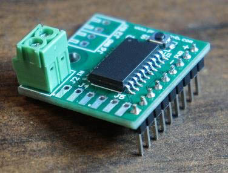
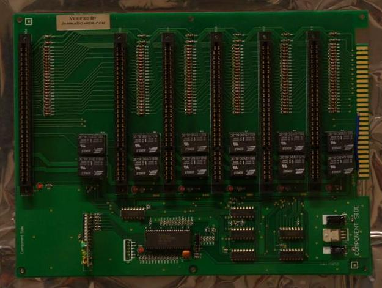
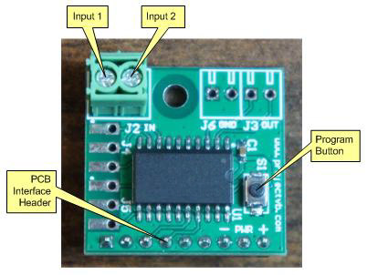
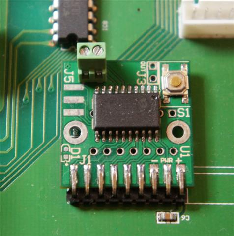

I'm selling the NoMote-6 JAMMA 6-in-1 switcher remote eliminator. It lets you use your existing control panel buttons, instead of the wireless remotes that the Chinese JAMMA switchers use.
The price is $20 each, plus $5 shipping to the US (actual shipping internationally), for as many boards as you order. Currently (as of March 2017) shipping to Canada is $11, and most of Europe is $15. Email me if you have any questions or if you'd like to order.
Pictures
Here's a picture of the latest version of the NoMote-6 (it installs the same way, and is functionally identical to the original version, with just a few minor improvements):

This is the JAMMA switcher board that these are meant to be installed on:

These are the components of the board:

This picture shows the board installed on the JAMMA switcher:

Video
Here's a video I did a while ago (a few features have been added, but has the same basic functionality):
Features:
-Eliminates the need for a wireless remote control on the 6-in-1 JAMMA Switcher
-Active slot can be selected using one or two buttons
--Button function is programmable to either:
---One button to select next port, (optionally) other button to select previous port
---Press both buttons simultaneously to select next port
-Can use dedicated game selection button(s), or existing buttons (i.e. start buttons)
-Button hold duration is programmable
-Startup port is programmable
-Unused ports can be disabled
NOTES:
-This is NOT plug and play... it requires desoldering the receiver, and soldering the NoMote-6 in place of it.
-You'll need a small flathead jeweler's screwdriver for the screw terminals. They are small, and slightly fragile, so be gentle.
-The program button is small... again, be gentle. Click the button with your fingernail, rather than squeezing the whole button with your finger (which can crush the switch if you squeeze too hard).